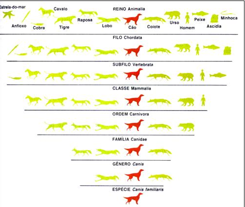

Sobre
Conehça os reinos dos animais!

Conheça os filos dos animais!
Conheça as especíes dos animais!
Conheça as classes dos animais!

Conheça as ordens dos animais!

Conheça os gêneros dos animais
O que são os animais?
Os animais são seres vivos que possuem algumas características em comum: nascem, desenvolvem-se, reproduzem-se e morrem. O conjunto dessas etapas é chamado de ciclo vital.
Eles podem ser classificados em vertebrados, invertebrados, selvagens, domésticos, terrestres, aquáticos, aéreos, entre várias outras formas. Vejamos algumas características desses grupos.
Quando surgiram?
Os animais surgiram á bilhões de anos atrás, mas vamos começar do começo; há 5 bilhões de anos a terra se formou através do agrupamento de gases e poeira cósmica existente no universo, Depois ouve uma solidificação da crosta terrestre deu-se há cerca de 4 bilhões de anos, com o resfriamento dos mares de leva incandescentes. Fortes chuvas começaram a cair sobre a superfície, resfriando o planeta cada vez mais e iniciando a formação dos oceanos. Desse momento em diante começaram a surgir os primeiros seres vivos, o primeiro foi à ameba que é uma forma de vida extremamente primitiva de uma única célula, que surgiu nos oceanos. Outro ser vivo a surgi foi a água-viva ou mais conhecida como Medusa, que foi um dos primeiros seres vivos a surgir com mais de uma célula. Com a evolução começou a surgir mais animais, cada um com característica.
Foi diferenciada em períodos a evolução das espécies:
- 1º Período Devoniano: iniciou em 416 e acabou em 359 milhões de anos atrás.
- 2º Período Carbonífero: iniciou em 359 e acabou em 299 milhões de anos atrás.
- 3º Período Permiano: iniciou em 299 atrás e acabou em 251 milhões de anos atrás.
- 4º Período Triássico: iniciou em 251 e acabou em 201 milhões de anos atrás.
- 5º Período Jurássico: iniciou em 199 e acabou em 145 milhões de anos atrás.
- 6º Período Cretáceo: iniciou em 145 e acabou em 65 milhões de anos atrás.
Após o período cretáceo, houve a primeira extinção em massa dos seres vivos com o asteroide que acertou a Terra, eliminando uma parte da população existente, e depois mudando drasticamente o clima influenciando na flora e fauna.
Tempo depois a Terra se reconstituiu, iniciando período Cenozóico, que é dividido em 6 partes. Esse período se constitui na formação geográfica existente, e na flora e fauna, ou seja, nesse período começou a construção da vida existente e dos continentes:
- 1º Período Paleoceno: iniciou em 65 milhões de anos e acabou em 55 milhões de anos atrás.
- 2º Período Eoceno: iniciou em 54 milhões de anos e terminou em 34 milhões de anos atrás.
- 3º Período Oligoceno: iniciou em 34 milhões de anos e terminou em 22 milhões de anos atrás.
- 4º Período Mioceno: iniciou em 22 milhões de anos e terminou em 11 milhões de anos atrás.
- 5º Período Plioceno: iniciou em 11 milhões de anos e terminou em 2 milhões de anos atrás.
- 6º Período Recente: iniciou em 1.8 milhões de anos atrás e dura até os dias de hoje.
Classificações:
Os animais possuem diversas classificações e características, no qual se torna possivel diferenciar um dos outros.
Assim é feita a classificação de uma espécie por meio de classes. A primeira classifica o Reino que o animal pertence e assim por diante. Neste exemplo seguiremos a classificação de um cachorro.
A classificação segue a seguinte ordem:
A seguir está representado os Reinos dos Animais.
Seres unicelulares.
Seres pluricelulares.
Seres multicelulares e a classificação dos vírus.

O passáro pica-pau é classificado da seguinte forma:
- Reino: Animalia
- Filo: Chordata
- Classe: Aves
- Ordem:Piciformes
- Fámilia: Picidae
- Gênero: Dryocopus

A borboleta é classificada da seguinte forma:
- Reino: Animalia
- Filo: Arthopoda
- Classe: Insecta
- Ordem:Lepidoptera
- Família: Nymphalidae
- Gênero: Danaus

O hamster style="color:#fff" é classificado da seguinte forma:
- Reino: Animalia
- Filo: Chordata
- Classe: Mammalia
- Ordem:Rodentia
- Fámilia: Cricetidae
- Gênero: Allocristulus

O beija-flor é classificado da seguinte forma:
- Reino: Animalia
- Filo: Chordata
- Classe: Aves
- Ordem:Apodiformes
- Fámilia: Trochilidae
- Gênero: Phaethornithinae

A tartaruga é classificada da seguinte forma:
- Reino: Animalia
- Filo: Chordata
- Classe: Reptilia
- Ordem:Testudinata
- Fámilia: Cheçpniidae
- Gênero: Caretta

O Lobo é classificado da seguinte forma:
- Reino: Animalia
- Filo: Chordata
- Classe: Mammalia
- Ordem:Carnivora
- Fámilia: Canidae
- Gênero: Canis